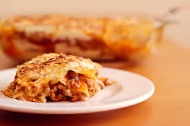

Lasagna Recipe
Home

Description
In this classic lasagna recipe, sheets of pasta are layered with a cheesy filling, a rich meaty tomato sauce, and more cheese and then baked until bubbly and browned.
While there are a few steps, this lasagna recipe is relatively easy to make and has so much flavor.
Ingredients
- 12 lasagna noodles uncooked
- 2 ½ cups shredded mozzarella cheese
- ¼ cup shredded Parmesan cheese
Sauce
- 1/2 pound lean ground beef
- 1/2 pound Italian sausage
- 1 yellow onion diced
- 2 cloves garlic minced
- 36 ounces pasta sauce
- 2 tablespoons tomato paste
- 1 teaspoon Italian seasoning
- 1/2 teaspoon salt more to taste
Cheese Mixture
- 2 cups ricotta cheese or cottage Cheese
- 1/4 cup chopped fresh parsley
- 1 large egg beaten
- 1 and 1/2 cups shredded mozzarella Cheese
- 1/4 teaspoon salt
Steps
- Preheat the oven to 350°F. Bring a large pot of salted water to a boil. Add the lasagna noodles and cook until al dente (firm) according to package directions. Drain, rinse under cold water, and set aside.
- Meanwhile, in a large skillet or Dutch oven, brown the beef, sausage, onion, and garlic over medium-high heat until no pink remains. Drain any fat.
- Stir in the pasta sauce, tomato paste, Italian seasoning, ½ teaspoon of salt, and ¼ teaspoon of black pepper. Simmer uncovered over medium heat for 5 minutes or until slightly thickened. Taste and season with additional salt if desired.
- In a separate medium bowl, combine 1 ½ cups mozzarella cheese, ¼ cup parmesan cheese, ricotta, parsley, egg, and ¼ teaspoon salt.
- Spread 1 cup of the meat sauce in a 9×13 pan or casserole dish. Top it with 3 lasagna noodles. Layer with 1 cup of the ricotta cheese mixture and 1 cup of meat sauce. Repeat twice more. Finish with 3 noodles topped with remaining sauce
- Cover with foil and bake for 45 minutes.
- Remove the foil and sprinkle the top of the lasagna with 2 ½ cups mozzarella cheese and ¼ cup Parmesan cheese. Bake uncovered for an additional 15 minutes or until browned and bubbly. Broil for 2-3 minutes if desired.
- Rest for at least 15 minutes before cutting.
- Enjoy!
More Recipes